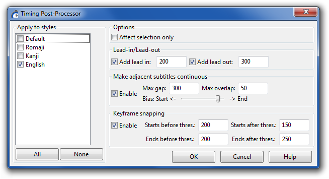

The timing postprocessor is a highly useful tool for automatically correcting timing in various ways.
As shown in the screenshot, there are three functions:

The processing gets applied in the order it is displayed in the dialogue box. That is to say, first lead-in/outs are added, then a check for adjascent lines is performed and lines that are closer than the given threshold are made continuous, and lastly, line start/ends get snapped to keyframes.
This field determines which styles will get processed - check all you want to process. This is useful for only processing dialogue lines while leaving signs and/or karaoke alone.
Check "Affect Selection Only" to restrict the operation to the selected lines. If this is left unchecked, all lines in the file whose style match the selected ones will be affected.
This function extends the start/end times of the line, a procedure known as adding lead-in and lead-out. The postprocessor will add the given time (in milliseconds) to each line start and end, respectively. You can add both lead-in and lead-out, only one, or none, by checking and unchecking the boxes as appropriate. Adding lead-in or out will never make lines overlap if they do not already overlap.
This function will check if any two lines' starts and ends are closer in time than the given threshold (in milliseconds). If they are, one or both will get their start and/or end time moved so that they are continuous (i.e. one appears directly following the next, without any subtitle-less frames in between).
The Bias slider determines how the lines are extended. Sliding it all the way to the right will extend the end time of the first line all the way to the start time of the second, without touching the second line at all. Sliding it all the way to the left will instead make the start time of the second line extend backwards to the end of the first line, without touching the first line at all. Putting it in the middle will extend the end time of the first line and the start time of the second equally, so that they meet in the middle. Anything in between will makes the lines "meet" where the slider is, so to speak. For example, if the threshold was 1000, and the slider was 3/4ths of the way to the right (roughly as shown in the screenshot), the end time of the first line would get extended by 750 ms, and the start time of the second extended backwards with 250 ms.
Note that when using Make adjacent subtitles continuous to eliminate overlaps, you probably do not want to enable adding lead-in or out, as that is applied before the overlap elimination.
The keyframe snapping function is a kind of automatic scenetimer. It is probably the most useful of the three, but will only work if there is a video or keyframe loaded, because of its dependency on keyframes. See the keyframes section of the working with video page.
The keyframe snapping function will look at how close the start and end of lines are to the nearest keyframe, and if they are closer than the given threshold, it will get extended or shortened to the keyframe.
There are four thresholds to consider:
When using this feature, remember your lead-in/out times! Your Starts before and Ends after thresholds should normally be at least as long as your lead-in and lead-out, or lines which were initially scene-timed may be turned into bleeds.
Another thing you can do with the keyframe snapping feature is using it to correct one-frame bleeds really, really fast. If your script is full of them, just set all the thresholds to 50, disable the lead-in/out adding and the adjacent line snapping, choose your dialogue style, and hit Apply. Problem solved.